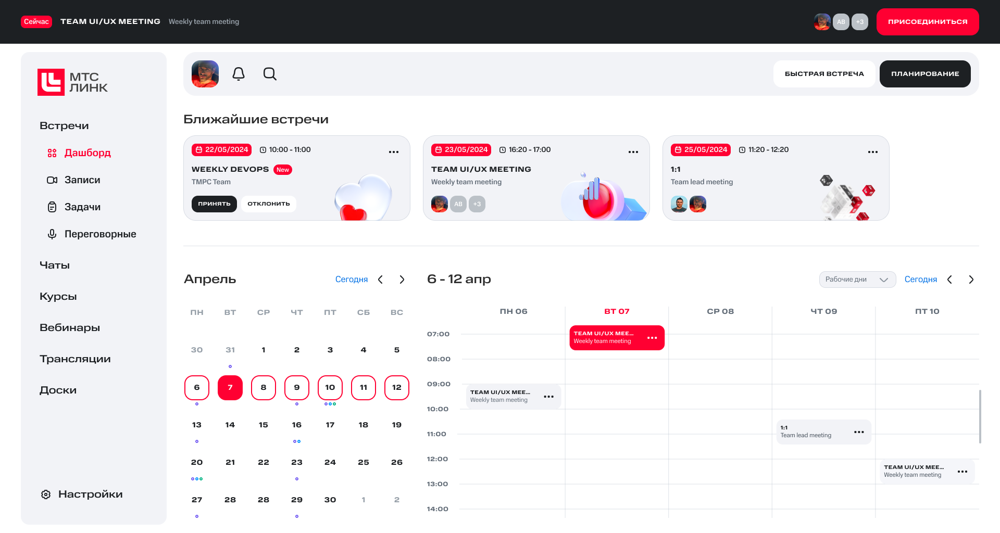
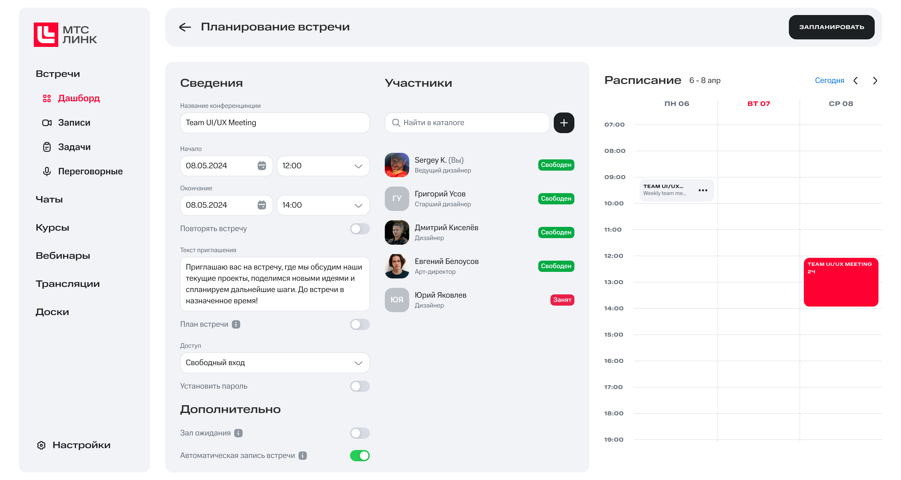
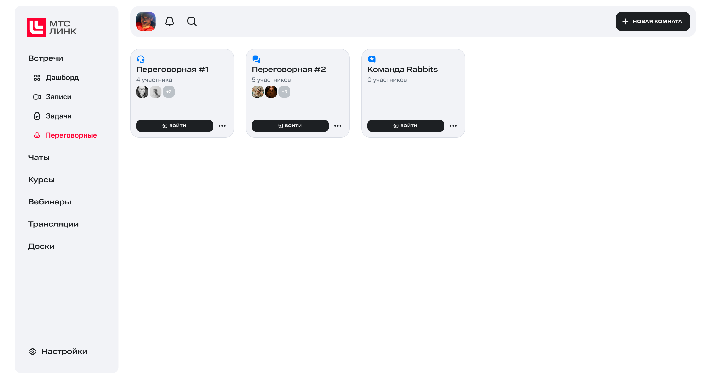
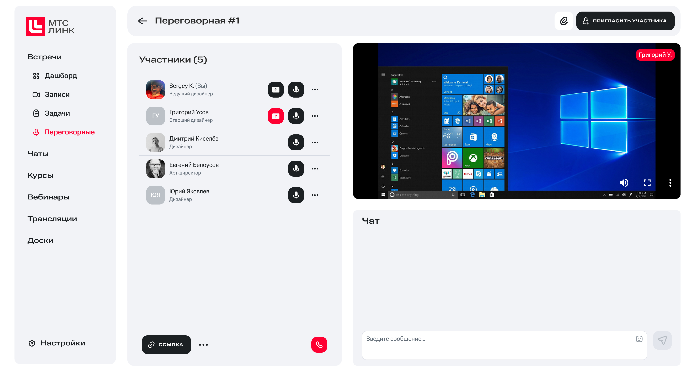

Конкурентный анализ
Гипотезы и исследования
Интервью и опрос
Синтез результатов
Участие в архитектуре и создании персон
Usability-тестирование
УЧЕБНАЯ ПРОЕКТНАЯ ПРАКТИКА / 2024
TEAMWORK UX RESEARCH B2B
МТС ЛИНК
Исследование и концепция сервиса «Встречи» для бизнес-коммуникаций


01 / ПРОЕКТ
Реальный кейс от команды дизайнеров МТС Линк
Представители продукта выступали заказчиками: команда провела брифинг и защищала решение непосредственно перед ними.
ФОРМАТУчебная проектная практика
Концепция, без запуска в прод
02 / БРИФ ЗАКАЗЧИКА
Встреча заканчивается.
Работа с её результатами — нет.
Сложно вести встречу и фиксировать договорённости
Менеджер одновременно модерирует разговор, слушает участников и пытается не потерять задачи.
Долго искать важное после встречи
Записи, заметки и договорённости существуют раздельно, а вернуться в контекст нужно быстро.
ЗАДАЧА / Спроектировать сервис «Встречи», который помогает подготовиться к созвону, фиксировать результаты и быстро возвращаться к контексту.
03 / ИССЛЕДОВАНИЕ
Проверяли не интерфейс,
а реальный процесс работы со встречами
ОГРАНИЧЕНИЕ
Опрос из 10 участников использовали как дополнительную проверку качественных наблюдений, а не как репрезентативное исследование.
До интервью я определила выборку, гипотезы и структуру разговора
01Кого искали
Возраст — 25–50 лет.
Роли — от рядовых сотрудников до руководителей с командами 30+ человек.
Отрасли — телеком, IT, финтех и логистика.
02Что проверяли
Как фиксируют договорённости и заметки.
Что делают после пропущенной встречи.
Каких инструментов не хватает до, во время и после созвона.
03Как построили интервью
Контекст рабочего дня → планирование → проведение встречи → фиксация решений → постанализ.
Для руководителей и модераторов подготовили отдельные уточнения. Разговор занимал около 30 минут и записывался с согласия респондента.04 / ВЫВОДЫ ИНТЕРВЬЮ
Один сервис должен поддерживать три разных типа коммуникации
ПОЛНОЦЕННАЯ ВСТРЕЧА
План, протокол, заметки и зафиксированные договорённости.
РЕГУЛЯРНАЯ ВСТРЕЧА
Дейли, ретро и другие повторяющиеся встречи с быстрым входом.
БЫСТРЫЙ СОЗВОН
Решение небольшой задачи и совместная работа без сложной настройки.
РУКОВОДИТЕЛИ БОЛЬШИХ КОМАНД
5–6 встреч в день. Нужны план, резюме, договорённости и быстрый возврат в контекст.
ТИМЛИДЫ РАСПРЕДЕЛЁННЫХ КОМАНД
До 3 встреч в день. Важны повторяющиеся комнаты, запись и объяснение информации коллегам.
05 / КОНЦЕПЦИЯ
«Встречи» объединяют весь рабочий цикл созвона
Команда связала подготовку, проведение и последующую работу с материалами в одной системе — вместо набора разрозненных инструментов.
ДО
планирование и повестка
ВО ВРЕМЯ
заметки, задачи, транскрибация
ПОСЛЕ
запись, резюме, инсайты
Сервис сопровождает встречу на всём её жизненном цикле
Планирование
Повестка, участники и материалы
Проведение
Созвон и совместная работа
Фиксация
Заметки, задачи и договорённости
Постанализ
Записи, резюме и поиск
ЕДИНАЯ ВСТРЕЧА
Все материалы и результаты доступны внутри одного объекта
06 / МОЯ ЗОНА ПРОЕКТИРОВАНИЯ
Переговорная — созвон
без лишней подготовки
Сценарий для быстрых вопросов внутри команды: пользователь видит доступные переговорные, понимает, кто уже внутри, и подключается к разговору.


07 / КОМАНДНЫЙ РЕЗУЛЬТАТ
От аналитики — к системе ключевых сценариев
На основе исследования команда спроектировала главную, планирование, конференцию, задачи, записи, переговорные и аналитику.
АВТОРСТВО
Я участвовала в исследовании и архитектуре; финальную сборку UI выполнял другой дизайнер команды.
08 / ПРОВЕРКА КОНЦЕПЦИИ
4 сценария
5 респондентов
Провела коридорные проверки и одно полноценное модерируемое тестирование прототипа. Участники работали с реалистичными рабочими ситуациями.
МЕТОД
Think Aloud · успех задачи · время · 5-балльные оценки лёгкости и удовлетворённости
Наблюдение → интерпретация → решение для следующей итерации
01Запланировать встречу с записью
НАБЛЮДЕНИЕРеспондент ожидал начинать планирование прямо из свободного слота календаря, а не из отдельной кнопки.
ДИЗАЙН-СЛЕДСТВИЕСделать календарь полноценной точкой входа в создание встречи.02Подключиться с опозданием и понять контекст
НАБЛЮДЕНИЕДля восстановления контекста респондент открыл план, общие заметки и задачи — именно эти материалы считал полезными.
ДИЗАЙН-СЛЕДСТВИЕСохранять план, заметки и To do внутри одной встречи и показывать их во время созвона.03Найти текущую встречу
НАБЛЮДЕНИЕКарточки встреч в верхней части экрана остались незамеченными; текущий статус приходилось определять по времени.
ДИЗАЙН-СЛЕДСТВИЕУсилили визуальный статус активной встречи и обеспечили переход к ней из календаря.09 / РЕЗУЛЬТАТ И РЕФЛЕКСИЯ
Первый масштабный опыт
исследований в продуктовой команде
РЕЗУЛЬТАТ
Команда защитила концепцию перед дизайнерами МТС Линк и получила высшую оценку.
Заказчик отметил дизайн, исследовательский подход и идею постоянных переговорных для быстрых командных созвонов.
Сильная сторона проекта — распределение ролей: мы работали асинхронно, но дружно и объединяли результаты на каждом этапе во время созвонов.
ЧЕМУ НАУЧИЛАСЬ
Планировать и проводить глубинные интервью
Удерживать структуру разговора
Слышать и уточнять опыт респондента
Синтезировать данные вместе с командой
Работать с брифом реального заказчика
ЧТО ИЗМЕНИЛА БЫ
Активнее участвовала бы в сборке финального UI, чтобы самой глубже поработать с дизайн-системой Granat.